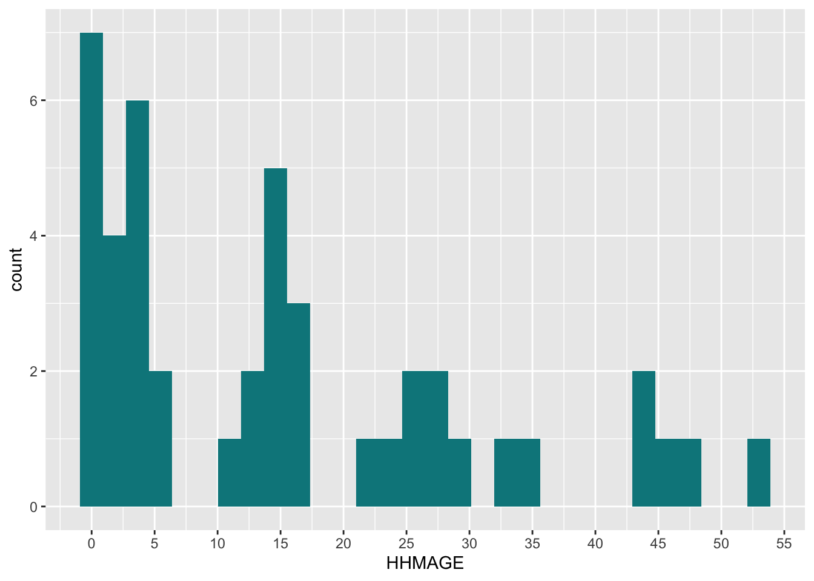

#To install the packages used in this guide, uncomment and run the lines below.
#install.packages(haven) # For importing SPSS files into R
#install.packages(janitor) # For cleaning/housekeeping datasets
#install.packages(dplyr) # For wrangling and summarising datasets
#install.packages(tidyr) # For reshaping datasets
#install.packages(ggplot2) # For plotting and visualization
#install.packages(questionr) # For easy frequency and descrptive tables
#install.packages(forcats) # For working with 'factor' or categorical data
library(haven)
library(janitor)
library(dplyr)
library(tidyr)
library(questionr)
library(ggplot2)
library(forcats)
# theme colors for plots
primaryColor <- 'turquoise4'
secondaryColor <- 'wheat3'
# ggplot2 theme object for styling plots
plotTheme <- theme_minimal() +
theme(
panel.grid.minor.x = element_blank(),
panel.grid.major.x = element_blank(),
text = element_text(size = 16),
legend.position = 'bottom'
)Survey Solutions and UNHCR’s SENS
Sample data analysis
Introduction
The Standardised Expanded Nutrition Survey (SENS) is a health and nutrition survey by the United Nation’s High Commission for Refugees (UNHCR), aimed at improving nutrition among refugee populations by gathering quality data to develop timely policies and interventions.
This document provides a brief guide to preparing SENS data for data analysis when the data-source is Survey Solutions. It assumes that the reader is familiar with Survey Solutions and has implemented (or will implement) a SENS activity using the standard Survey Solutions SENS template (will be linked when public).
The statistical software that will be used in this guide is R, an open-source language for graphical and statistical computing. All examples and code will be written in R, with the assistance of some key packages. All code was developed and tested using the R version 4.1.1. Please ensure that your local R installation is version 4 or higher.
This guide assumes no particular survey design and thus includes no design elements such as survey weights, strata, clusters, etc. However, the survey R package may be used in order to define and incorporate these elements into the analysis.
In addition, this guide will make heavy use of the Tidyverse, which is a set of packages and style-guidelines for data analysis in R. The two main Tidyverse packages used in this guide are dplyr, for data wrangling, and ggplot2, for plots and graphs. The ‘R Code: Preparation’ section contains more information about these and other R packages used in this guide.
Structure of Exported Data
The first step is exporting and downloading the survey data from Survey Solutions. The details of exporting data will not be discussed here but documentation can be found in the official Survey Solutions documentation site.
The image below displays all survey and system-generated files that are extracted from the Survey Solutions export.

For this guide, the files have been exported in SPSS format. The main survey files are:
- sens_suso.sav - the base file containing all household-level items. The modules included at this level are
- Demography (M. 1)
- Food Security (M. 5)
- Mosquito Net (M. 6)
- WASH (M. 7)
- HHMEMBERS.sav - the individual-level file containing individual-level items. These include child and woman questionnaire data and modules:
- Anthropometry & Health (M. 2) - Child and Woman
- Anaemia (M. 3) - Child and Woman
- IYCF (m. 4) - Child.
- BEDNETS.sav - information on bed nets from the Mosquito Nets module.
- WATERCONTAINERS.sav - information on household water storage containers from the WASH module.
For information on the system-generated Survey Solutions file, please refer to the official documentation.
R Code: Preparation
Installing and loading packages
Several very useful R packages will be used in this guide. These should be installed (if not done so already) and then loaded.
Additionally, some objects that will later help in theming plots and graphs are defined. For more information on colors and theming in R and ggplot2, please see here.
Importing, merging and preparing survey files
It is assumed that you have downloaded and extracted the SENS survey files into a folder called SENS_FILES in your local working directory. These files can now be worked with. What follows in this subsection is some basic preparation of the survey data to facilitate further analysis.
# 1. import files from local directory, save as R data frames
sens_hh <- read_sav('./SENS_FILES/sens.sav')
sens_ind <- read_sav('./SENS_FILES/HHMEMBERS.sav')
# 2. add household-size categorical variable
sens_hh <- mutate(sens_hh,
HHSIZE_CAT = case_when(
HHSIZE <= 4 ~ '1-4',
HHSIZE <= 6 ~ '5-6',
HHSIZE <= 9 ~ '7-9',
HHSIZE >= 10 ~ '>= 10')
)
# 3. Create AGEGROUP variable in the individual-level data frame
# 3a. define the age group labels at 5 year intervals
groupLabels <- c(
paste(seq(0, 90, by = 5), seq(0 + 5 - 1, 95 - 1, by = 5), sep = "-"),
paste('95+')
)
# 3b. create the AGEGROUP variable by 5 year intervals and apply group labels
sens_ind$AGEGROUP <- cut(sens_ind$HHMAGE, breaks = c(seq(0, 95, by = 5), Inf),
labels = groupLabels,
right = FALSE)
# 3c. ensure correct ordering of the age group 'levels'
sens_ind$AGEGROUP <- fct_relevel(sens_ind$AGEGROUP,
'0-4',
'5-9')
# 4. create a recoded SEX variable
sens_ind$SEX <- ifelse(sens_ind$HHMSEX == 1, 'Male', 'Female')
# 5. merge household and individual level data frames
sens_df <- left_join(sens_hh, sens_ind, by = 'interview__key')In the above code, the following things take place:
- The survey base/household-level file and the individual-level file are imported using the
read_savfunction from thehavenpackaged and saved in R objects as data frames. - A derived categorical variable of household size is created..
- A derived categorical (ordered) variable of individual age groups is created and formatted, ensuring that the order of the age group categories follows from smallest to largest.
- A recoded SEX variable is created to facilitate some later analysis.
- The household and individual level data frames are merged*, using
dplyr’sleft_join,into a single data frame namedsens_df.- The joining variable is interview__key, which is a key generated by Survey Solutions to uniquely identify interview cases. In this particular context, the interview__key is unique at the household level, meaning that each survey household can be distinctly identified by its interview__key.
*For more information on merges and joins with dplyr, see here.
Following, we create a simple function for displaying nicely formatted tables using the kableExtra package. This function takes as parameters the data frame (df) to create the table from and the caption (capt) to display.
# format a data frame using the {kableExtra} package
formattedTable <- function(df, capt){
df |>
kbl(caption = capt) |>
kable_styling(font_size = 14, full_width = F,
bootstrap_options = c("hover", "condensed"))
}Module 1: Demography
Household Response
Response rates are calculated from the consent (MDCCONST) variable. The function freq from the questionr package is used to produce easy frequency tables with labelled values.
The result is displayed with the help of our formattedTable function.
# 1. derive frequencies
response_freq <- freq(sens_hh["MDCCONST"])
# 2. output the results in a formatted table
formattedTable(response_freq, 'Household Consent')| n | % | val% | |
|---|---|---|---|
| [1] Yes | 7 | 63.6 | 63.6 |
| [2] No | 2 | 18.2 | 18.2 |
| [3] Absent | 2 | 18.2 | 18.2 |
| [-999999999] missing | 0 | 0.0 | 0.0 |
Household Totals
We can also display some aggregated summaries of the surveyed population. We will call these ‘Household Totals’ and they are derived by aggregating and summing the demographic summary variables available from the Demography module. We recall that these variables were automatically calculated by Survey Solutions for each interviewed household.
# 1. summarise survey data on household totals
survey_totals <- summarise(sens_hh,
`Total Surveyed` = sum(HHSIZE, na.rm = T),
`Total U2` = sum(TOTU2, na.rm = T),
`Total U5` = sum(TOTU5, na.rm = T),
`Total 5-14` = sum(TOT514, na.rm = T),
`Total 15-64` = sum(TOT1564, na.rm = T),
`Total 65+` = sum(TOT65OLD, na.rm = T),
`Total Pregnant` = sum(TOTPREG, na.rm = T))
# 2. pivot the table from wide to long format
survey_totals <- pivot_longer(survey_totals,
cols = everything(),
names_to = "Household Totals",
values_to = "Result")
# 3. output the results in a formatted table
formattedTable(survey_totals, 'Household Totals')| Household Totals | Result |
|---|---|
| Total Surveyed | 44 |
| Total U2 | 9 |
| Total U5 | 17 |
| Total 5-14 | 7 |
| Total 15-64 | 20 |
| Total 65+ | 0 |
| Total Pregnant | 6 |
Household Size
Using the questionr package, it is also easy to produce some basic frequency tables, such as household size categories using the HHSIZE_CAT variable created earlier.
hh_sizecat <- questionr::freq(sens_hh$HHSIZE_CAT)
formattedTable(hh_sizecat, 'Household Size')| n | % | val% | |
|---|---|---|---|
| >= 10 | 2 | 18.2 | 28.6 |
| 1-4 | 3 | 27.3 | 42.9 |
| 5-6 | 2 | 18.2 | 28.6 |
| NA | 4 | 36.4 | NA |
For reporting, it might be useful to create some graphs and visuals of demographic data. Below, we use the ggplot2 package to create a simple bar graph of household size frequencies.
For more information on ggplot2 and its syntax, refer to the Data Visualization chapter in R For Data Science (Wickham, 2016).
# bar chart of household size frequencies
ggplot(data = sens_hh, aes(HHSIZE_CAT)) +
geom_bar(fill = primaryColor) +
labs(x = 'Household Size', y = 'Count', title = 'Frequency of household size') +
plotTheme
Population Pyramid
We can also create a typical population pyramid. To do this, we first derive a data frame that groups data by sex and age group. Because of how ggplot2 renders the data, we also make the male population figures negative, so that the male pyramid bars go to side opposite of the female pyramid bars.
Thereafter, a somewhat complex ggplot function call is made to create the pyramid. Essentially, we are modifying a bar graph and applying some tricks to create the pyramid.
# 1. derive age group populations by sex
agegroups <- sens_ind |>
group_by(SEX, AGEGROUP) |>
summarise(POPULATION = n(), .groups = 'drop') |>
mutate(POPULATION = ifelse(SEX == 'Male', POPULATION * -1, POPULATION))
# 2. create population pyramid
ggplot(data = agegroups, aes(x = AGEGROUP, y = POPULATION, fill = SEX)) +
geom_bar(stat='identity') +
scale_fill_manual(values=c(primaryColor, secondaryColor)) +
scale_y_continuous(labels = ~ ifelse(.x < 0, .x * -1, .x)) +
coord_flip() +
labs(title = 'Population Pyramid') +
guides(fill = guide_legend(reverse = T)) +
plotTheme 